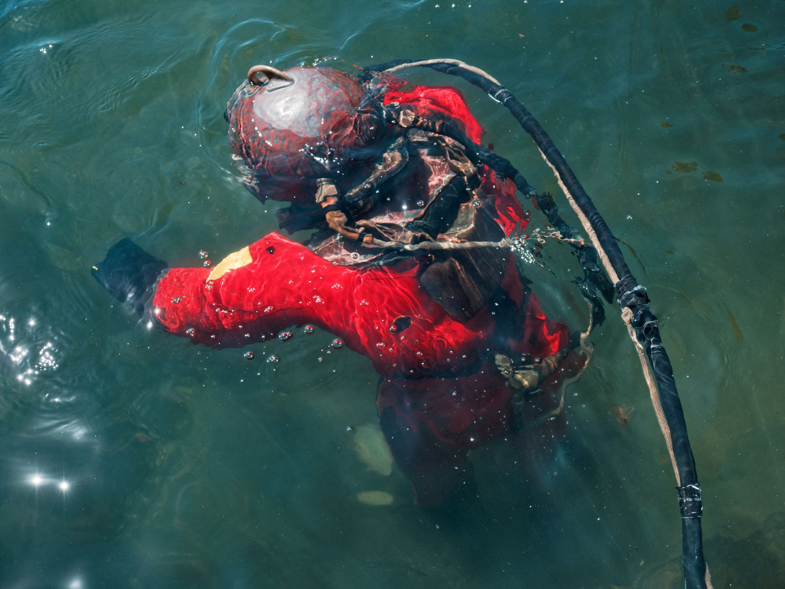

Commercial diving & underwater welding — North Sea & UK waters
Pressure is arithmetic. The plan is the product.
I am Callum Reid, a saturation diver and hyperbaric welder. Ports, utilities and offshore contractors hire this practice to inspect what they cannot see, and to repair pipelines and structures underwater — wet, or dry inside a habitat — with the depths, the pressures, the day rates and the abort criteria printed before anyone gets in the water.
Underwater welding is two different trades sharing a name. A wet weld is struck in the water: fast to mobilise, honestly limited in class. A dry hyperbaric weld is made inside a sealed habitat, in gas, at the pressure of the surrounding sea: slower, dearer, and capable of topside quality. This site tells you which is which, what each costs, and when the right answer is to stop the job.

Seasons offshore16
Deepest working depth92 m
Jobs stopped on limits3 — and counting is a point of pride
Firm quote without a surveyNever
§ 01
The sheet does the arithmetic in the open.
Depth & Pressure Explorer
Pick a job and a depth.The sheet does the arithmetic in the open.
Job sheet
Ambient pressure = 1 + depth ÷ 10, in bar, absolute. The only formula on this page — and the one every plan starts from.
1 — Job class
2 — Depth band
Ambient pressure at working depth
1 + 20 ÷ 10 = 3.0 bar absolute at 20 m
What the depth changes
Team & equipment this job carries
Day rate for this sheet
Worked check, printed so you can hold us to it: at 20 m, 1 + 20 ÷ 10 = 3.0 bar. At 70 m, 1 + 70 ÷ 10 = 8.0 bar. If a contractor's numbers do not survive this arithmetic, their plan will not survive the water.
§ 02
First booked, first planned.
Services on the board
Availability as of November 2026.First booked, first planned.
Pipeline & structure inspection
0–50 m
Booking — winter 2026
Wet weld repair
0–50 m
Available
Dry habitat repair & tie-in support
10–90 m
One slot — spring 2027
Cutting & removal
0–90 m
Booking
Saturation campaigns — diver-welder
50–90 m+
By agreement
Every service above is sold the same way: a survey or a proper brief first, a written plan with limits and abort criteria second, and a day rate from the card below. Enquiries go through one form or one email address — both reach the same desk.
§ 03
excl. VAT. The explorer reads this same table.
The rate card, printed
£ per operational day (12 hours on task window),excl. VAT. The explorer reads this same table.
Rate card — scroll sideways on small screens
| Job class | 0–10 m | 10–30 m | 30–50 m | 50–90 m | Mobilisation |
|---|---|---|---|---|---|
| Inspection & survey | £1,850 | £2,050 | £2,450 | £3,400 | £950 |
| Wet weld repair | £2,600 | £2,950 | £3,500 | £4,600 | £1,750 |
| Dry habitat repair | £7,900 | £8,600 | £9,400 | £11,800 | £8,600 |
| Cutting & removal | £2,300 | £2,600 | £3,100 | £4,200 | £1,500 |
What moves the price, in order: depth first — it sets the team, the gas planning and the decompression obligation. Duration second — a saturation campaign spreads its chamber costs across weeks, so long deep jobs are not simply long shallow ones multiplied. Weather third: if a vessel is held on station but diving is suspended on limits, standby is charged at 60% of the day rate, agreed in writing before mobilisation. Distance last: mobilisation is the printed figure within UK waters.
Fixed fees: a written inspection report with stills, video log and thickness readings is £650 per structure. A pre-tender survey day, where the structure has never been dived, is one inspection day at the band rate — credited in full if the repair is awarded to this practice.
§ 04
What the last inspection bought
Attached to Job 01 on the Jobs Done page.“The inspection found the crack two budget cycles before it would have found us. We repaired fourteen metres of quay wall inside planned maintenance, at a planned price, with the port open. The report was written the way the invoice was: every figure checkable.”